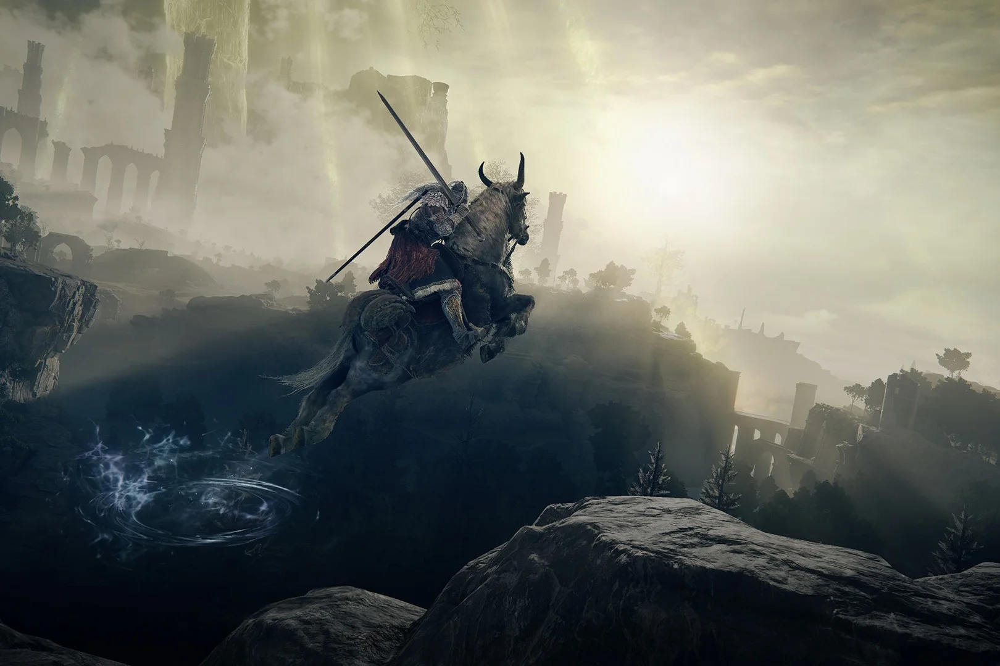

Elden Ring é um jogo de RPG de ação em terceira pessoa
desenvolvido pela FromSoftware e publicado pela Bandai Namco Entertainment.
O jogo está sendo dirigido por Hidetaka Miyazaki, criador da série Dark Souls e
Bloodborne, e pelo escritor de fantasia George R. R. Martin, autor da série de livros
As Crônicas de Gelo e Fogo.
Elden Ring tem sido altamente aguardado desde seu anúncio na E3 2019
e tem gerado uma grande quantidade de especulações e teorias entre os fãs.
O jogo está programado para ser lançado em 21 de julho de 2022 para Microsoft
Windows, PlayStation 4, PlayStation 5, Xbox One e Xbox Series X/S.

O jogo apresenta mecânicas de combate desafiadoras e profundas,
semelhantes às dos títulos anteriores da FromSoftware.
Além disso, os jogadores podem invocar outros jogadores para
ajudá-los na luta contra chefes e para explorar o mundo juntos.